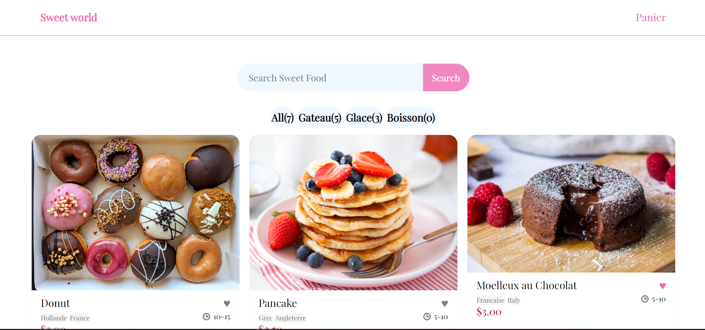

Project 2022/2023
-
Projet Candy Store

Lien Github : https://github.com/bulle-creator/Candy_Store
Lien : https://bulle-creator.github.io/Candy_Store/
Pour ce projet j'ai voulu faire un site vitrine, pour un café spécialisée dans les sucreries. Le café s'appele Candy Store et vende des boissons, des glaces et gâteaux. La particularité du café et que les menus sont inspirés des couleurs.
Projet Relaxica
Lien Github : hhttps://github.com/bulle-creator/Relaxica
Lien : https://bulle-creator.github.io/Relaxica/
Relaxica est un site web que j'utilise pour me concentrer, il diffuse simplement de la musique.
Relaxica à un petit probléme, les fichier audio étant trop lourd sur les musique sur le site actuelle sont raccourcit. Pour avoir les musiques originales du site il faut aller sur GitHub et lire le README il y aura les liens.
Projet UPEC Reprographie

Lien Github : https://github.com/bulle-creator/Tableau-de-relever-compteur
Lors de mon stage j'ai du crée un relever compteur pour le service reprografique.
J'ai du créé un site qui le permet de savoir combien de copie il font au mois
Sweet World

Lien Github : https://github.com/bulle-creator/Sweet-World
Sweet-world est une version update de Candy store. Candy store a était dévelloper
avec Html et Css la ou Sweet World et faite avec Angular.Sweet World et donc un site d'achat en ligne .